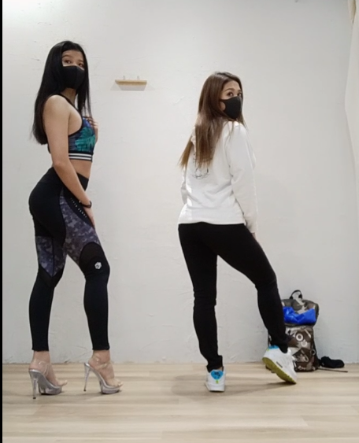

レッスン
トップへ戻る右オープン/バックステップ/フロントウォーク/右オープン(手は上から)/左オープン(手は下から)/バックステップ/ワンターン(手曲げる)/バックウォーク//バック1/髪かきあげ(オープンぽいの)/バック2/振り返り(足T字)フロントウォーク/右オープン/ターン/バックウォーク
| ポーズ | ポイント | 画像 |
|---|---|---|
| オープン | ・手を上からおろすときに頂上で横に移動させない ・下で調整するときは肩からではなく肘～手首だけ使う。バックステップの手がおさまるときのイメージ |
|
| バックステップ |
・上半身が前を向いてしまっているときがある。へそは斜め前。特に左オープン～のときになる |
|
| ワンターン | ・手を腰にあてないときは肩のサイドとリアの後ろ側のカットを見せるために手を曲げる |
|
| 髪かきあげ |
・横向いたときでも軸足はまっすぐであること ・骨盤は前傾の状態で尻がでていること |
 |
| バック |
・肩幅が広くなってきた分、相対的に足幅が狭くなってきてしまった。ヒールの袋位の幅がちょうど良い。 ・ひざを曲げすぎない ・胸をはり、骨盤しっかり前傾させる |
|
| 髪戻す | ・振り返りで髪が戻り切らない可能性があるので、足T字にしたときに毛束を掴んで戻す。掴まないなら首の振りも使って元に戻す。 |